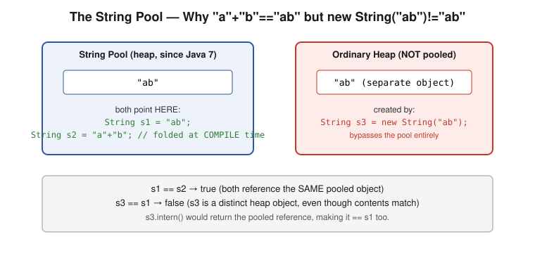
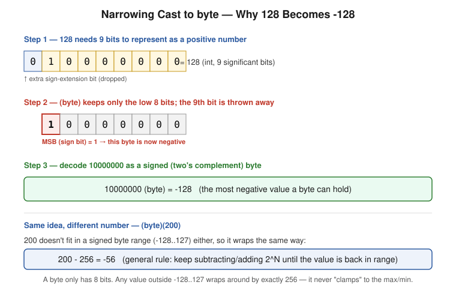
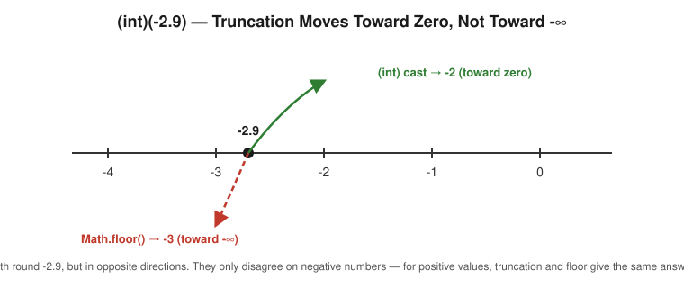
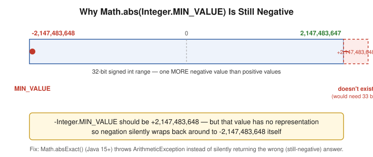
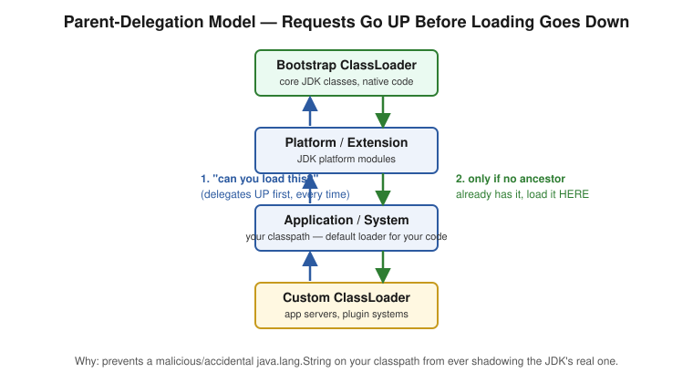
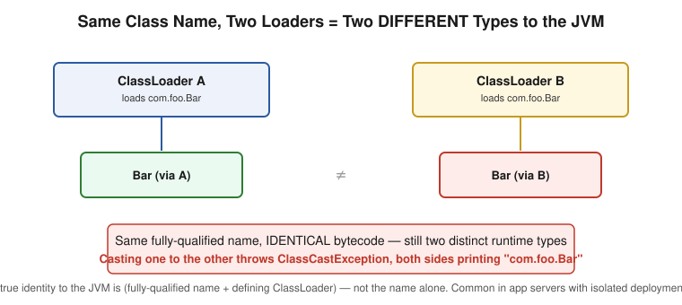
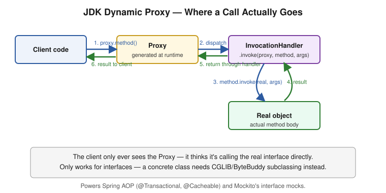
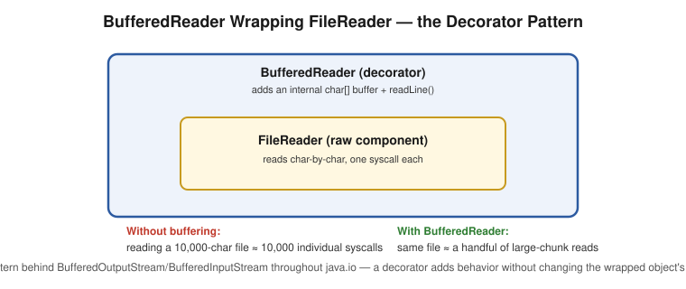
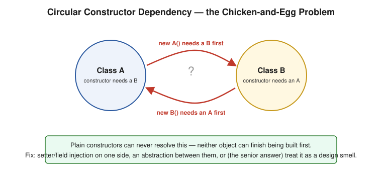

Segregated from the original 59-question flat list into thematic sections for easier revision. Bold = key answer point.
⚠️ Pitfall= interview trap / common mistake.
Deep-dive companion files in this folder (same style — explanation, worked Java code, pitfalls): Reflection · Enum · Generics · Exception Handling · StringBuilder & Immutability · OOP Fundamentals
See also: Java8-Features/ — a dedicated folder for Streams API, Lambdas & Functional Interfaces, and Method References (kept separate since it's substantial enough to warrant its own set of parts).
System.out.printlnSystem.out is a static final PrintStream field on java.lang.System, initialized by the JVM at startup wrapping standard output.println() writes the string representation + platform line separator, and auto-flushes on newline.FileOutputStream → file descriptor 1 (stdout).⚠️ Pitfall:
System.out/err/incan be reassigned at runtime viaSystem.setOut()— relevant for redirecting output in tests.
System.out considered thread-safe?PrintStream methods are synchronized on the stream instance — a single println() call won't have its output garbled/interleaved.⚠️ Pitfall: "Thread-safe" here = won't corrupt a single write, not deterministic multi-line ordering across threads.
main() method?System.exit() could run before the "no main" error — closed in Java 7+.public static void main(String[] args) is mandatory.⚠️ Pitfall: Don't state the static-initializer trick as still working today.
main() is run?main(String[]) on the main thread.⚠️ Pitfall:
mainreturning ≠ JVM exiting immediately if other non-daemon threads are alive.
System.out.println("Hello")?javac → bytecode) → Class Load (classloader + verify + prepare/init) → Execute (interpret, then JIT hot paths to native code) → println writes via PrintStream → OS stdout fd.⚠️ Pitfall: Structure the answer in clear stages — interviewers check mental-model organization, not just facts.
throws be used with run() or main()?main: yes — throws Exception legal; uncaught exception → JVM prints stack trace, exits non-zero.Runnable.run(): no — interface declares no throws; overriding method can't widen checked exceptions.⚠️ Pitfall: Ties directly to the "can't widen checked exceptions when overriding" OOPS rule.
Thread.wait() in main?wait() is on Object, requires holding the monitor lock.IllegalMonitorStateException.⚠️ Pitfall:
someThread.wait()doesn't make "the thread object" wait specially — it makes whichever thread calls it wait on that object's monitor.
UnsupportedClassVersionError at class-loading — bytecode version embedded in .class must be ≤ JVM's supported version.⚠️ Pitfall: Mention
--release/-source/-targetflags as the practical fix.
sun.*) restrictions.⚠️ Pitfall: Don't say "always works unconditionally" — name the JAXB/Java EE removal explicitly.
Object class?equals, hashCode, toString, getClass, wait/notify/notifyAll.⚠️ Pitfall: None of
Object's methods are abstract — default working implementations exist for every class.
Objectequals(Object), hashCode() — must be overridden together, consistently.toString(), getClass(), clone() (protected, needs Cloneable), wait/notify/notifyAll, finalize() (deprecated since Java 9).⚠️ Pitfall: Listing
finalize()without the deprecation caveat signals outdated knowledge.
hashCode() of an object⚠️ Pitfall: Don't state "it's literally the memory address" as absolute fact.
== vs .equals() — the real difference== on primitives compares value; on references compares identity..equals() defines logical equality (defaults to identity unless overridden)..equals() behaves identically to ==.⚠️ Pitfall: Pair with the
Integercache gotcha (Q48) —Integer a=127,b=127; a==b→true, but200→false.
equals()/hashCode() contractequals() contract:
1. Reflexive : x.equals(x) → true
2. Symmetric : x.equals(y) ⟺ y.equals(x)
3. Transitive : x.equals(y) ∧ y.equals(z) → x.equals(z)
4. Consistent : repeated calls return same result (no state change)
5. Null-safe : x.equals(null) → false (never throws)
hashCode() contract:
6. Same object → same hashCode (within one JVM run)
7. equals()==true → hashCode() MUST also be equal (mandatory)
8. Same hashCode → equals() may be true OR false (collisions fine)
@Override
public boolean equals(Object o) {
if (this == o) return true;
if (!(o instanceof Employee e)) return false; // null-safe + type check
return id == e.id && Objects.equals(name, e.name);
}
@Override
public int hashCode() { return Objects.hash(id, name); }
⚠️ Pitfall — HIGH VALUE: Most candidates only know rule 7. Reciting all 5 equals() rules + both hashCode() rules unprompted is a strong depth signal. Also mention: Java 14+ Records auto-generate both correctly.
Object.clone() default = shallow copy — primitives by value, references shared with original.⚠️ Pitfall: Concrete failure:
order2.getItems().add(x)also mutatesorder1's list under shallow copy.
@Override
public Order clone() {
Order copy = (Order) super.clone();
copy.items = new ArrayList<>(this.items);
return copy;
}
clone() entirely.⚠️ Pitfall: Voice the informed opinion — Effective Java calls
Cloneable/clone()"largely broken."
CloneNotSupportedException?Object.clone() if the class doesn't implement Cloneable (a marker interface with no methods, checked at runtime by native clone()).⚠️ Pitfall: This is exactly why
Cloneableis considered an awkward interface — it doesn't declareclone()itself, just gatesObject.clone()'s runtime behavior.
new String(...) bypasses the pool; .intern() manually pools.In plain words: think of the pool as a shared shelf of unique String values. Every time you write a literal like "ab" in your source code, the compiler checks the shelf first — if "ab" is already there, your variable just points to that existing copy instead of a new one. "a"+"b" is written as two separate literals, but since both halves are known at compile time, the compiler folds them into a single "ab" literal before the program even runs — so it resolves to the exact same shelf entry as a plain "ab" literal, which is why == reports true. new String("ab"), on the other hand, is an explicit runtime instruction to build a brand-new object on the regular heap, deliberately bypassing the shelf — so even though its contents are identical, it's a different object, and == reports false.

⚠️ Pitfall: Classic gotcha —
"a"+"b" == "ab"→ oftentrue(constant folding),new String("ab") == "ab"→false. Have both examples ready.
char[] preferred over String for passwords?char[] can be explicitly zeroed (Arrays.fill(pw, '0')) right after use.In plain words: once you create a String holding a password, you have no way to force it out of memory early — because Strings are immutable, there's no "clear this string's contents" operation, and you don't control exactly when the garbage collector reclaims it. So the plaintext password could realistically sit in memory for an unpredictable amount of time, visible to anyone who takes a heap dump. A char[], by contrast, is a plain mutable array — the moment you're done with it, you can call Arrays.fill(pw, '0') to actively overwrite every character in place, right then, on your own schedule, rather than hoping the GC gets to it soon. That's the real distinguishing reason — active, immediate zeroing — not simply "Strings are immutable" (which is true, but doesn't by itself explain why immutability is the problem here).
⚠️ Pitfall — KEY POINT: The real reason is active zeroing capability, not "strings are immutable" alone — an interviewer wants to hear that you understand why immutability matters here specifically (no way to actively clear it), not just that Strings happen to be immutable.
0.1 + 0.2 == 0.3; // FALSE — 0.30000000000000004
Double.NaN == Double.NaN; // FALSE! NaN never equals itself
Double.isNaN(nan); // TRUE — the ONLY correct check
1.0 / 0.0; // POSITIVE_INFINITY, no exception
10 / 0; // ArithmeticException (int division DOES throw)
0.0 / 0.0; // NaN
For money: use BigDecimal with the String constructor, never the double constructor:
new BigDecimal("0.1").add(new BigDecimal("0.2")); // correct
new BigDecimal(0.1); // WRONG — imprecision baked in
In plain words, why each surprise happens:
- 0.1 + 0.2 != 0.3: double stores numbers in binary floating point, and just like 1/3 has no exact finite decimal representation, 0.1 and 0.2 have no exact finite binary representation — they're stored as the closest approximation the format allows. Adding two approximations doesn't necessarily land exactly on the approximation of 0.3, so the tiny rounding errors show up as 0.30000000000000004.
- NaN == NaN is false: NaN ("Not a Number") represents the result of an undefined operation like 0.0/0.0 — by design (IEEE 754, the standard Java's floating point follows), NaN is defined to compare unequal to everything, including another NaN, specifically so that an accidental undefined result can never silently look like a normal, valid comparison passing. This is exactly why Double.isNaN(x) exists — it's the only reliable way to check.
- new BigDecimal(0.1) is wrong: the double constructor path takes the already-imprecise binary approximation of 0.1 and locks that imprecision into the BigDecimal, rather than the value 0.1 you actually meant. The String constructor instead parses the decimal digits "0.1" directly, with no binary floating-point step in between, giving you the exact value you wrote.
⚠️ Pitfall — HIGH VALUE:
nan == nanbeingfalsecatches people off guard.new BigDecimal(0.1)"looking correct" while being wrong is a real production bug.
⚠️ Pitfall: Don't conflate the two categories in your answer.
byte → short → int → long → float → double (char folds into int side). Automatic, generally no data loss.⚠️ Pitfall:
int→float/long→float/doublecan lose precision even though "widening" — not always lossless.
(type). Overflow is defined: JLS specifies modular truncation, not clamping.(byte)(1000d) → -24 (wraps, doesn't clamp to Byte.MAX_VALUE).⚠️ Pitfall: Have the exact wrap-around number ready — reciting "might lose data" without a number is the weak answer.
(Type) needed.Integer i=7; Number num=i; Object obj=i; all implicit.⚠️ Pitfall: After upcasting, you can only call methods on the reference's static type, even though the real object is still the subtype underneath.
ClassCastException at runtime.B b=new B(); A a=b; C c=(C)a; (B, C both extend A, unrelated) — compiles, throws at runtime.⚠️ Pitfall — MEMORIZE THIS: The sibling-cast trick question — compiler only checks "plausible given declared type," not actual runtime correctness.
(byte)(128) — walk-throughbyte b = (byte)(128); // -128
In plain words: a byte only has 8 bits to work with, and the highest of those 8 bits is reserved as the sign bit (0 = positive, 1 = negative) — this is called two's complement. The number 128 needs 9 bits to write out as a positive number (0 1000 0000). When you cast to byte, Java doesn't resize or clamp anything — it just keeps the low 8 bits and throws the 9th away. What's left is 1000 0000. Because the leftover top bit is now 1, the JVM reads the whole thing as a negative number instead of the positive 128 you started with — and in two's complement, 1000 0000 happens to decode to exactly -128.

⚠️ Pitfall: Follow-up:
(byte)(200)→200-256 = -56. General rule: keep ±2^N(256 for byte) until the value lands back in the valid -128..127 range — it wraps, it never clamps toByte.MAX_VALUE.
(int)(-2.9) — truncation vs rounding(int)(-2.9); // -2, NOT -3
In plain words: (int) casting doesn't "round" at all — it just chops off the decimal part, always moving toward zero. For a positive number like 2.9, chopping toward zero and rounding down (flooring) give the same answer (2). But for a negative number, they disagree: -2.9 chopped toward zero lands on -2 (a smaller magnitude, but a larger value on the number line), while Math.floor(-2.9) moves toward negative infinity and lands on -3 (a smaller value). Same starting number, two different "correct" answers depending on which operation you actually call.

⚠️ Pitfall — VERY COMMON MISTAKE: Confusing truncation with flooring; they only diverge for negative numbers — for positive numbers,
(int)cast andMath.floor()always agree.
Integer.MIN_VALUE negation — overflow trapMath.abs(Integer.MIN_VALUE) == Integer.MIN_VALUE; // TRUE — still negative!
In plain words: a 32-bit signed int can represent 2,147,483,648 negative values but only 2,147,483,647 positive ones — one extra negative slot, because two's complement is asymmetric. Integer.MIN_VALUE is -2,147,483,648. Negating it should give +2,147,483,648, but that number is one more than the largest int can hold — there's simply no bit pattern for it. So the negation silently wraps back around to -2,147,483,648, the exact same (still negative) value you started with. Math.abs() on the most negative int is the one case where "absolute value" doesn't actually make the number non-negative.

⚠️ Pitfall: Use
Math.absExact()(Java 15+) to throwArithmeticExceptioninstead of silently returning the wrong (still-negative) result.
Object — needed for generics (List<Integer>), collections, reflection.⚠️ Pitfall:
Long sum=0L; for(...) sum += i;silently boxes/unboxes every iteration — use a primitive accumulator instead.
int → Integer : Integer.valueOf(int) // compiler inserts this
Integer → int : integerObj.intValue() // and this
No JVM magic — plain compiler-inserted method calls.
⚠️ Pitfall: It's
Integer.valueOf(), notnew Integer()— this is exactly what routes through the cache.
Integer : -128 to 127 (default), tunable via -XX:AutoBoxCacheMax=N
Boolean : TRUE/FALSE singletons, always
Byte : -128 to 127 (ALL byte values — fixed)
Short : -128 to 127 (fixed)
Long : -128 to 127 (fixed, NOT configurable)
Character : 0 to 127 (fixed)
Double : NO cache
Float : NO cache
⚠️ Pitfall — SCOPE LIMITATION: Only
Integer.valueOf(int)(autoboxing) uses the cache.new Integer(5)always creates new object.Integer.parseInt("5")returns a primitive, no boxing at all.
int : 4 bytes
Integer : 16 bytes (12-byte header + 4-byte field) → 4x overhead
int[1000] : ~4 KB
Integer[1000] : ~20 KB → 5x overhead
⚠️ Pitfall: Have exact byte numbers ready — quantified answer beats "boxing has overhead."
Integer x = null;
int y = x != null ? x : 0; // NullPointerException!
Integer y = x != null ? x : 0; // FIX — keep result type as Integer
Ternary result type is determined from both branches at compile time — one branch Integer, other int → forces unboxing regardless of which branch runs.
⚠️ Pitfall — GENUINELY SURPRISING: The explicit null check makes it look safe; the bug is about static type determination, not runtime branch selection.
List<Integer> efficiently (avoiding boxing in streams)// BAD — boxes/unboxes every reduce step
int sum = list.stream().reduce(0, Integer::sum);
// GOOD — mapToInt converts once, upfront
int sum = list.stream().mapToInt(Integer::intValue).sum();
⚠️ Pitfall: Connects directly to Q49 —
mapToInt/mapToLong/mapToDoubleexist specifically to avoid per-step boxing cost.
@Retention(RetentionPolicy.RUNTIME)
@Target(ElementType.METHOD)
public @interface Loggable {
String value() default "";
}
Consumed via reflection at runtime or annotation processors at compile time.
⚠️ Pitfall: An annotation alone does nothing — it's inert until something actively reads it.
@RetentionSOURCE (compiler-discarded), CLASS (default, kept in .class but not runtime-loaded), RUNTIME (reflection-visible).⚠️ Pitfall — REAL BUG: Forgetting
RUNTIMEretention → reflection-based lookup silently finds nothing, no error.
@Target do?⚠️ Pitfall: Can accept multiple types in an array:
@Target({METHOD, FIELD}).
@Repeatable(Roles.class)
@interface Role { String value(); }
@interface Roles { Role[] value(); }
@Role("admin")
@Role("user") // without @Repeatable → COMPILE ERROR
class UserController { }
Java 8+ lets the compiler auto-wrap repeated annotations into the container.
⚠️ Pitfall:
getAnnotationsByType()returns all instances transparently regardless of@Repeatablevs manual container syntax.
| Reflection-based reading | Annotation Processor | |
|---|---|---|
| When it runs | Runtime, every app start | Compile time, once |
| Output | Behavior (proxies, wiring) | Generated source code |
| Runtime cost | Real (reflection overhead) | Zero |
| Used by | Spring (classic), Jackson | Lombok, MapStruct, Dagger2, AutoValue |
⚠️ Pitfall — KEY INSIGHT: Lombok rewrites the AST during compilation — zero runtime reflection footprint. This tension is why Spring AOT/GraalVM native image exist in Spring Boot 3.x.
Class.forName() vs ClassLoader.loadClass()Class.forName(name) loads and initializes (runs static initializer) by default.ClassLoader.loadClass(name) only loads, no initialization until first use.Class.forName(name, initialize, loader) overload can mimic lazy behavior.⚠️ Pitfall: JDBC driver registration relies specifically on
Class.forName()triggering the static initializer that self-registers withDriverManager.
In plain words: there's a small chain of loaders, each responsible for a different "layer" of classes — Bootstrap (the JDK's own core classes) sits at the top, then Platform, then your Application/System loader, then any Custom loader a framework adds. When any loader is asked to load a class, it doesn't just load it itself right away — it first asks its parent to try, and that parent asks its parent, all the way up to Bootstrap. Only if no ancestor already has that class does the request come back down and get loaded at the level that was originally asked. This "ask up before loading down" rule is the parent-delegation model.

⚠️ Pitfall: Explain why delegation exists — it guarantees that even if your own classpath accidentally (or maliciously) contains a file named
java.lang.String, the request forjava.lang.Stringgets delegated all the way up to Bootstrap first, which already has the real one — so your fake copy is never used, no matter where it sits on the classpath.
ClassCastException with identical-looking class names on both sides.In plain words: to the JVM, a class's real identity isn't just its name — it's the combination of (fully-qualified name + the specific ClassLoader that loaded it). So if two different, unrelated loaders both load a class named com.foo.Bar — even from the exact same .class file, byte-for-byte identical — the JVM treats the two results as two completely separate types that happen to share a name. If you try to cast an object built by one Bar into the other Bar, you get a ClassCastException — and the confusing part is the error message shows com.foo.Bar on both sides, since the printed name doesn't include which loader produced it. This typically shows up in app servers or plugin systems that intentionally give each deployed application its own isolated loader.

⚠️ Pitfall — STRONG SENIOR SIGNAL: Recognizing this exact symptom pattern instantly — a
ClassCastExceptionwhere both sides of the message print the identical class name is the tell that two ClassLoaders are involved, not a simple type mismatch.
1. LOADING — ClassLoader reads .class, creates Class object on heap
2. LINKING
a. Verification — bytecode correctness check
b. Preparation — static fields set to DEFAULTS (0/null), not real values
c. Resolution — symbolic → direct references
3. INITIALIZATION — static initializers + assignments, TEXTUAL ORDER, ONCE, thread-safe
⚠️ Pitfall: Preparation-vs-Initialization is the detail most collapse into one step — defaults happen first, real values later.
- First instance creation (new)
- First static method call
- First static field READ/WRITE (except compile-time constants)
- When a subclass initializes (parent ALWAYS initializes first)
- Class.forName() (reflection)
⚠️ Pitfall: Compile-time constants (
static final int X = 5) are inlined by the compiler — accessing them does NOT trigger the owning class's initialization.
Field f = obj.getClass().getDeclaredField("privateField");
f.setAccessible(true);
Object value = f.get(obj);
f.set(obj, newValue);
Used legitimately by DI frameworks, ORMs, test frameworks — but can violate invariants.
⚠️ Pitfall: Java 9+ module system can block this for non-
openspackages — no longer an unconditional bypass.
Constructor<Singleton> constructor = Singleton.class.getDeclaredConstructor();
constructor.setAccessible(true);
Singleton instance = constructor.newInstance();
Same mechanism as Q21 — a private constructor is a convention-level safeguard, not absolute.
⚠️ Pitfall: Same Java 9+ module caveat applies.
setAccessible(true) → throws InaccessibleObjectException.// module-info.java
module com.example.myapp {
opens com.example.internal to spring.core, com.fasterxml.jackson.databind;
}
// Emergency JVM flag:
// --add-opens java.base/java.lang=ALL-UNNAMED
⚠️ Pitfall — WORTH MENTIONING UNPROMPTED: This is a primary reason most Spring Boot apps don't actually adopt JPMS for application code — reflection-heavy frameworks rely on exactly this access.
Field f = String.class.getDeclaredField("value"); // Java 8, pre-module restriction
f.setAccessible(true);
char[] val = (char[]) f.get(internedHelloString);
val[0] = 'X'; // MUTATES the shared, pooled "hello" String!
Mutating an interned/pooled String corrupts it for every piece of code in the JVM referencing that literal.
⚠️ Pitfall — GENUINELY CATASTROPHIC, NOT THEORETICAL: Have this ready when asked "why does immutability matter" beyond thread-safety.
ClassNotFoundException/NoClassDefFoundError post-deployNoClassDefFoundError: check if the class's static initializer failed earlier — search logs for an earlier ExceptionInInitializerError.jar tf app.jar | grep ClassName.⚠️ Pitfall — MOST MISSED STEP: Searching backward in logs for the original triggering static-initializer failure, instead of staring at the current stack trace.
MyInterface proxy = (MyInterface) Proxy.newProxyInstance(
classLoader,
new Class<?>[]{ MyInterface.class },
(proxyObj, method, args) -> {
System.out.println("before " + method.getName());
Object result = method.invoke(realObject, args);
System.out.println("after");
return result;
});
java.lang.reflect.Proxy generates a runtime class implementing interfaces, routing calls through an InvocationHandler. Powers Spring AOP, Mockito interface mocks.
In plain words: the client code holds a reference typed as the interface, but the actual object behind it is a synthetic Proxy class the JVM generated on the fly — the client never sees or touches the real object directly. Every method call on that reference gets intercepted and routed to your InvocationHandler.invoke(proxy, method, args) method first. Inside invoke(), you decide what happens — typically some "before" logic, then method.invoke(realObject, args) to actually run the real method, then some "after" logic — before returning the result back out through the same chain to the original caller. This interception point is exactly where Spring inserts things like transaction management or caching without you writing that logic into your own class.

⚠️ Pitfall: Only works for interfaces — proxying a concrete class needs CGLIB-style subclassing (what Spring falls back to for
@Transactionalwithout an interface).
ClassLoader in dynamic proxy creationProxy.newProxyInstance() needs a ClassLoader because it generates a new class at runtime that must be defined into a classloader's namespace.⚠️ Pitfall: The question as usually phrased compares Proxy to itself (confused framing) — the real meaningful contrast is JDK dynamic proxies (interface-based) vs. CGLIB/ByteBuddy (class subclassing), which is what Spring's
@Transactional/@Cacheabledecision hinges on.
BufferedReader; why preferred over FileReaderFileReader reads char data directly — inefficient, near-per-char syscalls.BufferedReader wraps another Reader, buffers larger chunks, drastically reduces I/O ops. Adds readLine().In plain words: new BufferedReader(new FileReader("file.txt")) isn't inheritance — BufferedReader isn't a subclass of FileReader. It's wrapping: BufferedReader holds a reference to the FileReader you gave it, and adds a large internal in-memory buffer in front of it. Instead of asking the OS for one character at a time (a real, relatively expensive system call each time), BufferedReader asks the OS for a big chunk once, holds it in memory, and serves your read()/readLine() calls out of that in-memory chunk until it's exhausted — then goes back to the OS for the next chunk. Same underlying data, dramatically fewer actual I/O operations.

⚠️ Pitfall — ARCHITECTURAL SIGNAL: Frame as the Decorator pattern applied to I/O — same pattern behind
BufferedOutputStream/BufferedInputStreamthroughoutjava.io. The decorator wraps the original object and adds behavior, without the original needing to change or the caller needing a different interface.
instanceof. E.g. Serializable, Cloneable, RandomAccess.⚠️ Pitfall: Explain why — annotation = pure metadata; marker interface = permanently affects the type hierarchy (
instanceof), sometimes deliberately desired (likeSerializable).
In plain words: if A's constructor requires a fully-built B as an argument, and B's constructor requires a fully-built A, neither one can ever finish being constructed first — building A needs a B that doesn't exist yet, and building that B needs an A that doesn't exist yet either. It's not a bug in your code so much as a structural deadlock in the design. Since neither object can be "first," a plain constructor-only approach has no valid order to run in. The workarounds all do the same thing at heart: delay one side of the wiring until after both objects already exist as bare instances (setter/field injection), or restructure so neither class needs the other concrete class directly (introduce an interface, or a third coordinating class both depend on).

⚠️ Pitfall — SENIOR ANSWER: The real fix is recognizing poor separation of concerns, not just reciting the wiring hack — two classes needing each other at construction time is usually a sign they should be redesigned, not just patched with setter injection.
In plain words: "ghost methods" isn't real Java terminology — if you're asked this, the term itself is likely a red herring or a mis-phrased question, and the strongest answer is admitting you haven't heard that exact phrase rather than guessing a definition. What the interviewer is probably getting at is one of two real, compiler-generated things: a bridge method (an invisible method the compiler adds to keep polymorphism working correctly after generic type erasure — see core-java/Generics.md's Bridge Methods section for a full worked example), or a synthetic method (any compiler-generated method not written by the developer, such as the hidden accessor methods that let a nested class reach a private field of its enclosing class).
⚠️ Pitfall: The right interview instinct — admit unfamiliarity with the exact term, then pivot to the closest real concept you do know (bridge methods or synthetic methods) rather than inventing a plausible-sounding but wrong definition.
⚠️ Pitfall — LEAD WITH THESE: Race conditions + JIT timing differences are the two most likely intended answers.
@EntityGraph, projection DTOs).-Xlog:gc).CompletableFuture for parallel downstream calls).⚠️ Pitfall: This is experience-based — have one concrete story with measurable before/after (e.g. P99 latency X→Y), not just a generic list.
jstack <pid> / kill -3 <pid>) — check deadlocks, all threads stuck on same resource.⚠️ Pitfall — ALWAYS FIRST STEP: Thread dump before restarting — restarting destroys the evidence needed to fix the root cause.
Source: Notion "Chapter 2 — Core Java" (59 questions). Original toggle order preserved via Q-numbers for cross-reference; grouped here by topic for revision efficiency.
What Reflection is, how to get a
Classobject three ways, inspecting/invoking methods, fields, and constructors — including private ones — plus the senior-level performance and security angles the basic walkthrough usually skips. Interview Q&A at the end.
What it does: Reflection lets a running program inspect and manipulate its own classes, methods, fields, and constructors at runtime — including ones it couldn't reference directly at compile time. Concretely, it can tell you what methods a class has, what a method's return type and modifiers are, what interfaces a class implements, and it can read or write field values (even private ones) and invoke methods dynamically by name.
Why it matters beyond "cool trick": almost every framework you use daily runs on reflection under the hood — Spring's dependency injection (@Autowired resolves and injects fields via reflection), Jackson/Gson (serializing objects by reflecting over their fields), JUnit (finding and invoking @Test-annotated methods), and Hibernate (populating entity fields without calling your constructors or setters). Understanding reflection well is understanding how these frameworks actually work, not just how to use them.
What it is: every loaded class has exactly one corresponding java.lang.Class instance, created by the JVM at class-loading time. This object is the entry point for all reflection — it carries the class's metadata (methods, fields, constructors, modifiers, superclass, interfaces).
Three ways to get it:
// 1. Class.forName() — loads the class dynamically by fully-qualified name, if not already loaded
Class<?> c1 = Class.forName("com.example.Employee");
// 2. .class literal — resolved at compile time, no class loading triggered beyond what's already needed
Class<?> c2 = Employee.class;
// 3. getClass() — from an existing instance, always returns the RUNTIME type, not the reference type
Employee emp = new Manager(); // reference type Employee, runtime type Manager
Class<?> c3 = emp.getClass(); // returns Manager, not Employee
⚠️ Pitfall: these three are not interchangeable in every context.
Class.forName()actively triggers class loading (running static initializers) if the class isn't loaded yet — this is exactly how JDBC drivers used to self-register beforeServiceLoaderbecame standard..classandgetClass()don't force loading beyond what's already happened. Also,getClass()returning the runtime type (not the declared reference type) is the detail interviewers check — it's why polymorphic dispatch and reflection-based type checks can disagree with what the code "looks like" it's doing.
The core distinction: every reflective lookup comes in a get*() and a getDeclared*() variant, and confusing them is the single most common reflection mistake.
getMethods() / getFields() / getConstructors() |
getDeclaredMethods() / getDeclaredFields() / getDeclaredConstructors() |
|
|---|---|---|
| Visibility | public only | all — public, protected, package-private, private |
| Inheritance | Includes inherited public members from superclasses | Only members declared directly in this class — nothing inherited |
class Base {
public void publicBaseMethod() {}
private void privateBaseMethod() {}
}
class Employee extends Base {
public void publicMethod() {}
private void privateMethod() {}
}
Method[] pub = Employee.class.getMethods(); // publicMethod + publicBaseMethod (inherited) + Object's methods
Method[] all = Employee.class.getDeclaredMethods(); // publicMethod + privateMethod ONLY — no inherited methods at all, public or not
⚠️ Pitfall:
getDeclaredMethods()does not give you "everything including inherited" — it's the opposite axis fromgetMethods(). To truly enumerate every member across a hierarchy (public and private, including inherited), you have to walk up the superclass chain yourself, callinggetDeclaredMethods()at each level viagetSuperclass().
import java.lang.reflect.Method;
public class Employee {
private String name = "Sabari";
public String greet(String prefix) { return prefix + ", " + name; }
public static void main(String[] args) throws Exception {
Employee emp = new Employee();
Method greetMethod = Employee.class.getMethod("greet", String.class); // public, so getMethod() works
Object result = greetMethod.invoke(emp, "Hello"); // (target instance, args...)
System.out.println(result);
}
}
Output:
Hello, Sabari
invoke(target, args...) is the universal call mechanism — the target instance is null for static methods. The return type is always Object, so callers must cast.
What it does: by default, the JVM's normal access-control checks (private/protected/package-private) still apply during reflective access — attempting to read/write a private field without permission throws IllegalAccessException. setAccessible(true) tells the JVM to bypass that check for this specific Field/Method/Constructor object.
import java.lang.reflect.Field;
class Account {
private double balance = 500.0;
}
public class PrivateFieldDemo {
public static void main(String[] args) throws Exception {
Account acc = new Account();
Field balanceField = Account.class.getDeclaredField("balance"); // getDeclaredField -- private, so getField() would throw NoSuchFieldException
// balanceField.get(acc); // would throw IllegalAccessException here without the next line
balanceField.setAccessible(true); // bypasses the private access check
System.out.println("Before: " + balanceField.get(acc));
balanceField.set(acc, 750.0); // mutating a private field from outside the class entirely
System.out.println("After: " + balanceField.get(acc));
}
}
Output:
Before: 500.0
After: 750.0
⚠️ Pitfall — this is precisely the "encapsulation isn't a security boundary" gotcha:
privatein Java stops accidental misuse at compile time; it does not stop reflection at runtime. Frameworks rely on exactly this (Hibernate setting entity fields directly, Mockito injecting mocks into@InjectMocksfields) — but it also means a determined caller can always reach into any object's private state unless aSecurityManager/module boundary (Java 9+ strong encapsulation,--illegal-access) explicitly blocks it. As of Java 17+, the JDK's own internals are far more locked down against this than ordinary application code is.
import java.lang.reflect.Constructor;
class Point {
private int x, y;
public Point(int x, int y) { this.x = x; this.y = y; }
public String toString() { return "(" + x + "," + y + ")"; }
}
Constructor<Point> ctor = Point.class.getConstructor(int.class, int.class);
Point p = ctor.newInstance(3, 4); // equivalent to new Point(3, 4), but resolved at runtime
System.out.println(p);
Output:
(3,4)
This is exactly how Spring instantiates beans and Jackson instantiates deserialized objects when a no-arg constructor isn't available — getDeclaredConstructor() + setAccessible(true) + newInstance() is the standard pattern for frameworks needing to construct objects whose constructors aren't public.
Performance: every reflective call (invoke(), get(), set()) is dramatically slower than direct code — commonly cited at 10-100x overhead versus a direct method call or field access, because the JVM can't inline or optimize through the reflective indirection the way it can with normal bytecode. Method.setAccessible(true) also disables some JIT-level optimizations for that member. This is why performance-sensitive frameworks (modern Jackson, many DI containers) generate bytecode at startup (via ASM/ByteBuddy) to create direct accessor classes once, rather than paying the reflection cost on every single field access at runtime.
Security and modularity: since Java 9's module system, setAccessible(true) can be blocked entirely for JDK-internal classes unless the target module explicitly opens that package — this is why some libraries that worked fine on Java 8 broke or needed --add-opens flags on Java 9+.
⚠️ Pitfall: "reflection is just a bit slower" understates it for hot-path code — reflectively invoking a method inside a tight loop processing millions of records is a real, measurable production performance issue, not a theoretical one. Cache the
Method/Fieldobject (looked up once) rather than re-resolving it on every call, and consider whether reflection is even necessary versus a direct call, an interface, or a generated accessor.
What it is: java.lang.invoke.MethodHandle (Java 7+) is a lower-level, JVM-native mechanism for method invocation that the JIT can inline and optimize far more aggressively than classic Method.invoke() — MethodHandles are, in fact, exactly what invokedynamic (and therefore lambda expressions — see Java8-Features/Part2-Lambdas-Functional-Interfaces.md) compile down to underneath.
MethodHandles.Lookup lookup = MethodHandles.lookup();
MethodHandle greet = lookup.findVirtual(Employee.class, "greet", MethodType.methodType(String.class, String.class));
String result = (String) greet.invoke(new Employee(), "Hello");
Why it's faster: Method.invoke() goes through a generic, boxing-heavy call path that historically carried security-manager checks on every invocation (partially JIT-mitigated in modern JVMs, but still real overhead). A resolved MethodHandle, once warmed up by the JIT, behaves much closer to a direct method call, because the JVM has dedicated bytecode-level support for handle invocation that it never had for reflective Method.invoke().
⚠️ Pitfall — knowing it exists is the signal, not necessarily using it:
MethodHandle's API is notoriously low-level and unfriendly compared to reflection (explicitMethodTypeconstruction, no simplegetDeclaredMethods()-style enumeration) — it's the tool library and framework authors reach for once performance is genuinely proven to matter (modern JSON libraries, some DI containers, theinvokedynamicmachinery itself), not a drop-in replacement for everyday reflective code in application logic. For most application code, plain reflection (or better, avoiding the need for either) remains the right default — but recognizingMethodHandleby name, and why it's faster, is exactly the kind of ecosystem-currency signal a 10-YOE interview probes for.
Q: What is reflection, and where does the JVM actually use it besides "my own code calling it"? Reflection is runtime inspection/manipulation of classes, methods, fields, and constructors. Nearly every framework (Spring, Hibernate, Jackson, JUnit, Mockito) i
What problem
enumactually solves over constants, why it can't extend a class, constant-specific behavior, and the two enum-based design patterns (singleton, strategy) that come up most in senior interviews. Interview Q&A at the end.
Before enum (pre-Java 5): developers modeled a fixed set of options with int/String constants.
public static final int PENDING = 1;
public static final int APPROVED = 2;
public static final int REJECTED = 3;
void setStatus(int status) { ... }
setStatus(100); // compiles fine — nothing stops an invalid value
What's actually wrong with this, precisely:
1. No type safety — any int compiles, valid or not; the compiler can't help you.
2. No namespace — PENDING could collide with an unrelated constant named the same thing elsewhere.
3. No behavior — a constant is just a number; it can't carry logic.
4. No compiler-enforced exhaustiveness — nothing forces you to handle every valid value anywhere you switch on it.
enum Status { PENDING, APPROVED, REJECTED }
void setStatus(Status status) { ... }
setStatus(100); // compile-time error — not even a candidate
enum fixes all four: Status is its own type, PENDING lives in Status's namespace (referenced as Status.PENDING), constants can have fields/methods, and modern switch expressions on enums can be checked for exhaustiveness by the compiler/IDE.
What's actually happening under the hood: each enum constant is a public static final instance of the enum type itself, and the compiler implicitly makes every enum extend java.lang.Enum<E> — which is why an enum can never extend anything else (Java has single inheritance, and the slot is already taken). An enum can, however, implement interfaces freely.
interface Describable { String describe(); }
enum Status implements Describable {
PENDING, APPROVED, REJECTED;
public String describe() { return "Status: " + name(); }
}
⚠️ Pitfall: "enums can't extend a class" is the shallow answer — the precise reason (
enumimplicitly extendsjava.lang.Enum<E>, afinalclass, so the single-inheritance slot is used up) is what separates a memorized rule from real understanding, and it's exactly why enums can still implement any number of interfaces.
What it does: each enum constant can override an abstract method with its own implementation — effectively giving every value in the enum its own tiny anonymous subclass.
enum PaymentStatus {
SUCCESS { public boolean isFinal() { return true; } },
FAILED { public boolean isFinal() { return true; } },
PENDING { public boolean isFinal() { return false; } };
public abstract boolean isFinal();
}
Calling PaymentStatus.PENDING.isFinal() runs PENDING's own override, not a shared if/else on name(). This is strictly better than a switch scattered across the codebase every time behavior needs to vary by constant — the behavior lives with the constant itself, and adding a new constant forces you to supply its behavior right there (the compiler won't let you forget the abstract method).
public enum ConfigManager {
INSTANCE;
private final Map<String, String> settings = new ConcurrentHashMap<>();
public void set(String key, String value) { settings.put(key, value); }
public String get(String key) { return settings.get(key); }
}
// usage
ConfigManager.INSTANCE.set("env", "prod");
System.out.println(ConfigManager.INSTANCE.get("env"));
Output:
prod
Why this beats the classic private static final INSTANCE singleton pattern: the JVM guarantees enum constant creation happens exactly once, and it's inherently thread-safe with zero synchronization code needed — no double-checked locking, no volatile, none of the ceremony Part 4 of the multithreading notes covers for the classic lazy singleton. It's also serialization-safe by construction: Java's serialization mechanism special-cases enums to serialize only the constant's name() and resolve it back to the same singleton instance on the other side — the classic singleton pattern needs an explicit readResolve() to get this same guarantee (see the Serialization notes), enum singletons get it for free.
⚠️ Pitfall: this is the Effective Java (Joshua Bloch) recommended way to implement a singleton in modern Java, specifically because it closes the two hardest-to-get-right classic singleton failure modes (broken by reflection calling a private constructor directly, and broken by deserialization creating a second instance) automatically, without the developer having to remember any defensive code.
public enum Operation {
ADD { public int apply(int a, int b) { return a + b; } },
SUBTRACT { public int apply(int a, int b) { return a - b; } },
MULTIPLY { public int apply(int a, int b) { return a * b; } };
public abstract int apply(int a, int b);
}
System.out.println(Operation.ADD.apply(3, 4)); // 7
System.out.println(Operation.MULTIPLY.apply(3, 4)); // 12
This is the same constant-specific-behavior mechanism as PaymentStatus above, applied deliberately as the Strategy design pattern — each constant is a strategy, selected by name instead of by constructing a separate strategy object per case.
for (Status s : Status.values()) {
System.out.println(s + " ordinal=" + s.ordinal());
}
values() is a compiler-synthesized static method (not inherited from Enum) returning a defensive copy of the constants array in declaration order — this is why ordinal() reflects declaration order, not any semantic ranking, and why reordering enum constants is a silent behavior change if code relies on ordinal comparisons.
Why Enum<E extends Enum<E>> looks so strange: it's a self-referential generic bound (E must be a subtype of Enum<E> itself) — this is what lets Enum provide type-safe methods like compareTo(E) that only accept the same enum type, rather than accepting any arbitrary Enum.
⚠️ Pitfall — the ordinal trap: never persist an enum's
ordinal()to a database or serialize it as the source of truth for "which constant was this." Inserting a new constant in the middle of the declaration list shifts every ordinal after it, silently corrupting previously stored data. Persistname()(a stable string) instead, or an explicit custom code field.
What they are: EnumMap<K extends Enum<K>, V> and EnumSet<E extends Enum<E>> are specialized collection implementations usable only with enum keys/elements, internally backed by a plain array indexed directly by each constant's ordinal() — not a hash table at all.
enum Day { MON, TUE, WED, THU, FRI, SAT, SUN }
EnumMap<Day, String> schedule = new EnumMap<>(Day.class);
schedule.put(Day.MON, "Standup");
schedule.put(Day.WED, "Sprint Review");
// iteration order is ALWAYS declaration order (MON, TUE, WED, ...) -- never an unspecified hash-bucket order
Why this is genuinely faster than HashMap<Day, String>: a HashMap put/get pays for hashCode() computation, potential collision handling, and bucket traversal on every call. An EnumMap skips all of that — the enum constant's ordinal() is the array index, so a lookup is a direct array access, not a hash computation. It's real O(1) with a tiny constant factor and zero possibility of hash collisions, by construction — not just "usually fast like a HashMap," but structurally simpler and cheaper.
⚠️ Pitfall — this is a "know it exists" signal, not a hard technique: reaching for a generic
HashMap<SomeEnum, V>/HashSet<SomeEnum>instead ofEnumMap<SomeEnum, V>/EnumSet<SomeEnum>when the key/element domain is a fixed, known enum is a missed, essentially free optimization — and precisely the kind of thing a senior-level interviewer probes for specifically because it's cheap to know and easy to overlook in practice. If the map/set's keys are ever going to be an enum,EnumMap/EnumSetshould be the reflexive first
Generic classes/methods, bounded types, wildcards and the PECS principle, type erasure and everything it breaks (arrays, overloading, instanceof), heap pollution, and the restrictions erasure imposes. Interview Q&A at the end.
Before Java 5, collections stored Object — no compile-time type safety, and every read needed an explicit cast:
ArrayList list = new ArrayList();
list.add("Java");
list.add(10); // compiles — the list has no idea what it's "supposed" to hold
String s = (String) list.get(1); // compiles, throws ClassCastException at RUNTIME
Generics move that failure from a runtime ClassCastException (discovered by a user, in production) to a compile-time error (discovered by the developer, immediately):
List<String> list = new ArrayList<>();
list.add("Java");
list.add(10); // compile-time error — caught before the code ever runs
// Generic CLASS — type parameter belongs to the whole class, fixed at instantiation
class Box<T> {
private T value;
void set(T value) { this.value = value; }
T get() { return value; }
}
Box<String> box = new Box<>(); // T is bound to String for THIS box, forever
// Generic METHOD — type parameter belongs only to this method, inferred per call
public <T> void print(T value) { System.out.println(value); }
print("Java"); // T = String for this call
print(10); // T = Integer for this call, independently
⚠️ Pitfall: a generic class's type parameter is fixed once at object creation; a generic method's type parameter is resolved fresh on every individual call. Mixing these up leads to confusion about why a "generic" class instance can't suddenly hold a different type on a later call — it was never meant to.
class Calculator<T extends Number> { // T must be Number or a subtype
private T num;
double asDouble() { return num.doubleValue(); } // legal -- Number guarantees doubleValue()
}
// Calculator<String> calc; // compile error -- String is not a Number
Multiple bounds: <T extends Number & Comparable<T>> — at most one class bound, and it must come first; any number of interface bounds after it.
class RankedItem<T extends Number & Comparable<T>> {
T value;
boolean isBetterThan(T other) { return value.compareTo(other) > 0; } // needs Comparable
double magnitude() { return value.doubleValue(); } // needs Number
}
Three wildcard forms, each answering "what can I do with this collection of unknown-but-related type":
List<?> anyList; // unbounded -- read as Object only, effectively read-only (only null can be added)
List<? extends Number> readable; // upper-bounded -- accepts List<Integer>, List<Double>... can READ as Number, can't add
List<? super Integer> writable; // lower-bounded -- accepts List<Integer>, List<Number>, List<Object>... can ADD Integer, reads only as Object
PECS — Producer Extends, Consumer Super, the mnemonic for choosing between them:
// Producer of T (you only READ values out) -> use ? extends T
void printAll(List<? extends Number> numbers) {
for (Number n : numbers) System.out.println(n); // safe: everything in there IS-A Number
}
// Consumer of T (you only WRITE values in) -> use ? super T
void addIntegers(List<? super Integer> list) {
list.add(1);
list.add(2); // safe: whatever the real list type is, it accepts Integer
}
Why List<? extends Number> refuses .add():
List<? extends Number> list = new ArrayList<Integer>();
list.add(10); // compile error
The compiler only knows "some subtype of Number" — it could actually be a List<Double> behind that reference. Allowing add(10) (an Integer) into what might really be a List<Double> would silently corrupt it. Only add(null) is ever allowed, since null is valid for every reference type.
Why reading from List<? super Integer> only gives you Object:
List<? super Integer> list = new ArrayList<Number>();
Integer i = list.get(0); // compile error -- the compiler can't promise the real type IS Integer, only that it's SOME supertype
Object o = list.get(0); // fine -- Object is the only guaranteed common ground
⚠️ Pitfall: PECS isn't an arbitrary mnemonic to memorize — it's a direct consequence of what the compiler can actually prove about an unknown related type. If you can't articulate why
extendsblocks writes andsuperblocks precise reads, you have the rule memorized but not understood — and that's exactly the follow-up senior interviewers ask.
What it is: Java generics are a compile-time-only feature. The compiler enforces type safety at compile time, then erases the generic type information, replacing type parameters with their bound (or Object if unbounded) in the compiled bytecode.
List<String> list = new ArrayList<>();
// compiles down to, effectively:
List list = new ArrayList(); // raw type at the bytecode level -- List<String> and List<Integer> are IDENTICAL after compilation
Every one of the following restrictions is a direct consequence of erasure — not an arbitrary language rule:
// 1. Can't create a generic array -- there's no runtime type to make the array of
T[] arr = new T[10]; // compile error
// 2. Can't check instanceof against a parameterized type -- the parameter doesn't exist at runtime
if (list instanceof List<String>) { } // compile error
if (list instanceof List<?>) { } // fine -- unbounded wildcard has nothing to check
// 3. Can't overload methods that only differ by generic parameter -- they have the SAME erased signature
void method(List<String> list) { }
void method(List<Integer> list) { } // compile error -- both erase to method(List)
// 4. Can't instantiate a type parameter directly
T obj = new T(); // compile error -- erasure means the JVM has no idea what class T actually is at runtime
// 5. Can't have a static field of the type parameter
class Box<T> { static T value; } // compile error -- static belongs to the class, but T differs per-instance-type conceptually
// 6. Can't catch a generic type as an exception
catch (T e) { } // compile error
⚠️ Pitfall: every one of these six restrictions is frequently tested as an isolated "gotcha," but they all reduce to the same root cause: by the time the JVM runs the code,
Tsimply isn't there anymore. Leading with "because of type erasure" for any of these, rather than treating each as an unrelated arbitrary rule, is what demonstrates real understanding versus memorized trivia.
What it is: a situation where a variable of a parameterized type ends up referring to an object that isn't actually an instance of that parameterization — usually via mixing raw types with generics.
List<String> list = new ArrayList<>();
List raw = list; // raw type reference to the same object -- legal, but dangerous
raw.add(10); // compiles (raw types skip generic checks entirely) -- silently corrupts 'list'
String s = list.get(0); // ClassCastException at RUNTIME -- the Integer is really there, disguised as String
This is exactly the failure mode generics were introduced to prevent — and it can only resurface when raw types are deliberately or accidentally mixed back in with parameterized code (a common source: old pre-generics libraries, or careless casting).
class Parent<T> { T get() { return null; } }
class Child extends Parent<String> { @Override String get() { return "hi"; } }
After erasure, Parent.get() has signature Object get(), but Child.get() has signature String get() — these don't match at the bytecode level, which would break polymorphic dispatch (Parent p = new Child(); p.get(); needs to call Child's override). The compiler silently generates a synthetic bridge method — Object get() in Child that just calls the real String get() and returns its result — invisible in source code, purely there to keep override resolution working correctly despite erasure.
Object[] arr = new String[10]; // legal -- arrays are covariant
arr[0] = 10; // compiles, throws ArrayStoreException at RUNTIME -- array remembers its real component type
List<String> list = new ArrayList<>();
List<Object> objList = list; // compile error -- generics are invariant, deliberately
Arrays carry their component type at runtime and check it on every store (allowing this unsafe-looking assignment to compile, but failing loudly later). Generics carry no such runtime information (erasure), so the language closes the hole entirely at compile time instead — generic type parameters are invariant unless a wildcard explicitly says otherwise (which is the entire reason wildcards with PECS exist).
The real-world workaround for "can't create a generic array": the Type Erasure section above covers why new T[10] doesn't compile — no runtime type to build the array from. The practical, unsafe-but-common workaround:
@SuppressWarnings("unchecked")
T[] array = (T[]) new Object[10]; // compiles -- but genuinely unsafe if this array is ever exposed as a real T[] to outside callers
The JDK's own ArrayList.toArray(T[] a) avoids this hack by using Arrays.copyOf with a runtime Class token obtained from the caller-supplied array — that's precisely why toArray() takes an array argument at all, rather than just returning T[] directly.
@SafeVarargs — what it actually promises: a varargs parameter of a generic type (T... args) implicitly creates a generic array under the hood, which is exactly the heap pollution risk covered earlier in this file (a compiler warning: "possible heap pollution from parameterized vararg type"). @SafeVarargs (Java 7+) is a documented promise from the method author that the method body never does anything unsafe with that implicit array (storing into it in a way that could corrupt a caller's data, or exposing/returning it) — it suppresses the warning without changing anything at the bytecode level; it's a contract, not a fix.
⚠️ Pitfall — why
@SafeVarargshas restricted placement: it's only legal onstatic,final,privatemethods, or constructors (Java 9+ relaxed it to also allowprivateinstance methods) — specifically because those can't be overridden. If a non-final instance method could carry@SafeVarargs, a subclass could override it and break the safety promise the annotation makes, while callers relying on the (inherited) annotation would have no way to know the guarantee no longer holds.
public void swap(List<?> list, int i, int j) {
list.set(i, list.set(j, list.get(i))); // COMPILE ERROR -- can't call set(index, value) on a List<?>
}
The compiler treats ? as some specific but unknown type — it refuses list.set(i, someObject) because it can't prove someObject's type actually matches the list's real (unknown) element type, even though this swap is obviously safe in practice (every value being inserted came out of the same list).
The fix — capture the wildcard into a type parameter via a private helper method:
```java
public void swap(List<?> list, int i, int j) { swapHelper(list, i, j); }
private
The full exception model from the ground up: hierarchy and
Throwableinternals, exacttry/catch/finallymechanics, try-with-resources, designing custom exceptions, the overriding rules, production debugging (OOM variants, heap dumps, NPEs), Spring/stream/concurrency integration points, and how exceptions actually work at the JVM bytecode level. Interview Q&A at the end.
java.lang.Throwable
├── java.lang.Error -- JVM/environment failures, not application logic
│ ├── OutOfMemoryError
│ ├── StackOverflowError
│ ├── NoClassDefFoundError
│ ├── AssertionError
│ └── VirtualMachineError
└── java.lang.Exception
├── RuntimeException (unchecked) -- programming errors, compiler doesn't enforce handling
│ ├── NullPointerException
│ ├── ArrayIndexOutOfBoundsException
│ ├── ClassCastException
│ ├── IllegalArgumentException
│ ├── IllegalStateException
│ └── ConcurrentModificationException
└── Checked Exceptions -- compiler forces you to catch or declare
├── IOException → FileNotFoundException, SocketException
├── SQLException
├── ClassNotFoundException
└── InterruptedException
What every Throwable carries as internal state: detailMessage (the message string), cause (the wrapped original exception — the chaining mechanism), stackTrace (an array of StackTraceElement, captured at construction time, not throw time), and suppressedExceptions (populated by try-with-resources, Java 7+).
Why creating an exception is expensive: the Throwable constructor calls the native method fillInStackTrace(), which walks the entire current call stack right there at construction — in a deep layered Spring app (controller → service → repository → ...), that's real, non-trivial work. This single fact is the root cause of two other rules later in this doc: why exceptions must never be used for routine control flow, and why the actual expensive part of "throwing an exception" is capturing the trace, not the catch-block lookup itself.
Errors represent conditions the JVM itself can't recover from — environment/runtime failures, not application logic (OutOfMemoryError, StackOverflowError, NoClassDefFoundError). Exceptions represent conditions the application can reasonably anticipate and potentially recover from.
Technically you can catch (OutOfMemoryError e) — it compiles and runs, since Error extends Throwable. You almost never should:
1. The JVM may already be in an unstable state, with more failures likely.
2. For OOM specifically, the catch block's own allocations can throw a second OOM.
3. Catching broadly hides catastrophic failures from monitoring that should be alerting on them.
⚠️ Pitfall: the one legitimate exception is catching
OutOfMemoryErrorat the very top level specifically to log and trigger a graceful shutdown — some enterprise frameworks do this deliberately as a last resort, but it's not general practice.
Checked exceptions force callers to consider failure, at the cost of boilerplate. Unchecked exceptions give a cleaner API but let callers silently ignore failure modes. The precise guidance (Effective Java, Item 71) is sharper than "always use unchecked": use checked exceptions when a caller can reasonably recover — retry, fall back, prompt the user — use unchecked for programming errors (an unexpected null, an invalid argument) the immediate caller usually can't meaningfully act on. Most modern Spring codebases lean unchecked-by-default specifically because checked exceptions on every method pollute every caller's signature across a deep call chain.
void process(String input) throws IOException {
if (input == null) {
throw new IllegalArgumentException("Input must not be null"); // throw -- actually raises it, in the body
}
readFile(input); // may throw IOException, declared via throws in the signature
}
A method can declare more exceptions in throws than it actually ever throws — legal, but bad practice, since it forces every caller to handle failure modes that can never occur.
Does throw null; compile? Yes — but it throws NullPointerException at runtime; the JVM checks the throw target is non-null immediately before the throw happens.
Three ways to rethrow:
catch (IOException e) { throw e; } // 1. same exception, unchanged
catch (IOException e) { throw new ServiceException("Failed", e); } // 2. wrapped/chained -- the default pattern
catch (Exception e) { throw e; } // only ONE type actually thrown inside try -- precise rethrow (Java 7+): compiler infers the real type
When does finally get skipped? Exactly four cases: System.exit() inside the try; a fatal JVM crash; an infinite loop/deadlock inside try (control never leaves it); the OS kills the process externally (kill -9).
What happens when finally itself throws? It silently destroys whatever exception was already propagating:
try {
throw new IOException("original");
} finally {
throw new RuntimeException("from finally"); // the IOException is GONE -- not chained, not suppressed, permanently lost
}
// caller sees ONLY the RuntimeException
What happens when finally contains a return? It silently overrides the try block's return value:
int compute() {
try { return 1; } finally { return 2; } // caller receives 2, not 1
}
⚠️ Pitfall: both of the above are why
finallyshould be used only for cleanup, never for control flow (return/throw). The correct resource-cleanup pattern:
Connection conn = null;
try {
conn = getConnection();
return doWork(conn);
} finally {
if (conn != null) conn.close(); // cleanup only -- no return, no throw
}
catch (IOException | SQLException ex) {
log(ex); // ex is implicitly final -- cannot be reassigned
}
Multi-catch types cannot be in a parent-child relationship — catch (Exception | IOException ex) is a compile error, since IOException already is an Exception.
Catch blocks must be ordered specific-to-general — listing a broader type before a narrower one is a compile error (unreachable catch block), not just a style nit. This maps directly onto how the JVM actually resolves exceptions at runtime (see the exception table section below) — table entries are matched in order, so an out-of-order broad entry would silently shadow the narrower one beneath it.
BufferedReader br = new BufferedReader(new FileReader("file.txt"));
Throwable primaryException = null;
try {
// try body
} catch (Throwable t) {
primaryException = t;
throw t;
} finally {
if (br != null) {
if (primaryException != null) {
try { br.close(); }
catch (Throwable suppressed) { primaryException.addSuppressed(suppressed); } // the key mechanism
} else {
br.close();
}
}
}
What happens when both the try body and close() throw? The close() exception is not lost — it's attached via addSuppressed(), retrievable later via e.getSuppressed(). This is precisely the fix for the "exception from finally destroys the original" failure mode above — try-with-resources exists specifically to avoid that.
Multiple resources close in reverse declaration order (LIFO):
try (Connection conn = getConn();
PreparedStatement stmt = conn.prepareStatement(sql);
ResultSet rs = stmt.executeQuery()) {
// use rs
}
// closed: rs -> stmt -> conn
Java 9+: effectively-final variables declared outside the try can be referenced directly, without redeclaring: try (conn) { ... }.
A well-formed custom exception — unchecked, constructors matching RuntimeException conventions, and critically, always providing a cause-accepting constructor so chaining survives:
public class ProductNotFoundException extends RuntimeException {
private final String productId;
public ProductNotFoundException(String message) { super(message); this.productId = null; }
public ProductNotFoundException(String productId, String message) { super(message); this.productId = productId; }
public ProductNotFoundException(String message, Throwable cause) { super(message, cause); this.productId = null; } // never skip this
public String getProductId() { return productId; }
}
An enterprise error-code hierarchy — scales far better once you have dozens of exception types needing consistent client-facing error responses:
public class AppException extends RuntimeException {
private final ErrorCode errorCode;
public enum ErrorCode {
PRODUCT_NOT_FOUND("PROD-001", "Product not found"),
PAYMENT_FAILED("PAY-001", "Payment processing failed");
private final String code; private final String defaultMessage;
ErrorCode(String code, String defaultMessage) { this.code = code; this.defaultMessage = defaultMessage; }
public String getDefaultMessage() { return defaultMessage; }
}
public AppException(ErrorCode errorCode, String details, Throwable cause) {
super(errorCode.getDefaultMessage() + ": " + details, cause);
this.errorCode = errorCode;
}
}
Decision framework: checked when the caller can realistically recover (a timeout worth retrying); unchecked for programming errors, or when designing a library API where checked exceptions on every method would pollute every caller.
⚠️ Pitfall — exceptions as control flow:
// BAD -- pays fillInStackTrace() cost just to branch on a parse failure
try { int value = Integer.parseInt(input); } catch (NumberFormatException e) { value = 0; }
// GOOD -- explicit check, no exception machinery at all
int value = input.matches("\\d+") ? Integer.parseInt(input) : 0;
An overriding method cannot throw new or broader checked exceptions than the parent declares — it can throw the same, a narrower one, or none. Unchecked exceptions are entirely unrestricted.
class Parent { void show() throws IOException { } }
class Child extends Parent {
void show() throws IOException { } // same -- OK
void show() throws FileNotFoundException { } // narrower -- OK
void show() { } // none -- OK
void show() throws Exception { } // broader -- COMPILE ERROR
void show() throws SQLException { } // new, unrelated checked -- COMPILE ERROR
}
Why: direct consequence of polymorphism / Liskov substitution — Parent p = new Child(); p.show(); — the caller only knows Parent's declared exceptions; if Child could throw something broader, calling code prepared only for Parent's contract would be caught off guard by a type it never accounted for. If Parent declares no checked exception at all, Child can't introduce one either. A child can legally drop a throws entirely — that's a strictly narrower, safe contract.
ClassNotFoundException is checked, thrown by application-level APIs (Class.forName(), ClassLoader.loadClass()) when a class genuinely can't be located during an explicit dynamic load. NoClassDefFoundError is an Error (LinkageError), thrown by the JVM itself when a class that was available and verified at compile time is missing at runtime while the JVM is implicitly resolving a reference.
Failed static initializer cascade: the first access throws ExceptionInInitializerError; every subsequent attempt to use that class in that classloader throws NoClassDefFoundError — the JVM marks the class permanently broken after one failed init.
class Broken { static { if (true) throw new RuntimeException("init failed!"); } }
// 1st access: ExceptionInInitializerError
// every access after: NoClassDefFoundError
⚠️ Pitfall — the "it worked yesterday" playbook: check for a recent deployment removing/changing a JAR, check the classpath itself, and scroll up in the logs above the
NoClassDefFoundErrorfor an earlierExceptionInInitializerError— that's very often the real root cause hiding above the symptom.java -verbose:classandjdepshelp confirm what's actually loading.
The variants have completely different root causes — knowing which one you have changes the entire investigation:
- Java heap space — heap full, objects can't be collected (real leak, or genuinely oversized working set).
- GC overhead limit exceeded — JVM spending >98% of time in GC reclaiming <2% of heap.
- Metaspace — class metadata exhausted, typically from excessive dynamic class generation (CGLIB proxies, Groovy).
- Direct buffer memory — ByteBuffer.allocateDirect() pool exhausted; common with NIO/Netty/Kafka clients.
- Unable to create new native thread — OS thread limit hit, usually unbounded thread creation rather than pooling.
Step one after an OOM alert: capture diagnostics before restarting — restarting destroys the evidence.
jmap -dump:format=b,file=heap.hprof <pid>
jstack <pid> > threads.txt
Ideally automated proactively: -XX:+HeapDumpOnOutOfMemoryError -XX:HeapDumpPath=/var/log/app/heapdump.hprof
Analyzing the dump: Eclipse Memory Analyzer (MAT) — the Dominator Tree shows which objects retain the most memory, the Leak Suspects Report auto-detects likely culprits, OQL lets you query the heap directly.
Most common leak patterns to check first: a static collection used as an unbounded cache; loading an entire table into memory (repo.findAll() on a huge table); HTTP sessions never invalidated; ThreadLocal.set() without a matching remove() in a pooled-thread environment (the thread — and the leaked value — outlives any individual request); classloader leaks from hot-redeploy app servers; an unbounded Kafka consumer queue where commits can't keep pace with intake.
The Kubernetes-specific gotcha: -Xmx must be set below, not equal to, the container memory limit — the JVM needs headroom for metaspace, thread stacks, native memory. Rule of thumb: -Xmx ≈ 75% of the container limit, with -XX:+UseContainerSupport (default since Java 10) so the JVM correctly reads cgroup limits. An OOMKilled pod status is the OS/cgroup killing the container for exceeding its limit — a different failure from a Java-level OutOfMemoryError; kubectl describe pod tells you which one actually happened.
Confirming a real leak via GC logs: enable with -Xlog:gc*:file=/var/log/gc.log:time,uptime,level,tags:filecount=10,filesize=20m. The signal: heap usage after full GC should stay roughly stable over time. A steadily climbing post-GC baseline (200MB → 300MB → 450MB) is the clearest signature of a real leak, versus a temporarily busy period that a full GC successfully reclaims back down.
Playbook for an NPE that only happens in production: first hypothesize the dev/prod mismatch — production data with nulls dev's seed data doesn't have; a prod-only config resolving to null; a race condition only manifesting under real load; an external service returning null under a timeout that never happens against a stable dev mock. Then: read the stack trace precisely, check for a specific triggering input/ID, pull live diagnostics without redeploying (Actuator log-level changes, distributed tracing), grab a thread dump if concurrency is suspected, and apply defensive fixes:
Objects.requireNonNull(user, "User must not be null for operation X");
Optional<User> user = userRepository.findById(id);
user.orElseThrow(() -> new UserNotFoundException("User " + id + " not found"));
Java 14+ helpful NPE messages (default since Java 15, -XX:+ShowCodeDetailsInExceptionMessages) name the exact null variable:
Old: NullPointerException at UserService.java:42
New: Cannot invoke "User.getName()" because "user" is null at UserService.java:42
Worth confirming this flag is actually enabled on older deployments.
How @ControllerAdvice works internally: scanned/registered as a Spring bean at startup, wired into ExceptionHandlerExceptionResolver — one of the HandlerExceptionResolvers DispatcherServlet chains through when a controller throws.
@RestControllerAdvice
public class GlobalExceptionHandler {
@ExceptionHandler(ProductNotFoundException.class)
public ResponseEntity<ErrorResponse> handleProductNotFound(ProductNotFoundException ex, HttpServletRequest req) {
return ResponseEntity.status(HttpStatus.NOT_FOUND)
.body(new ErrorResponse("PROD-001", ex.getMessage(), req.getRequestURI()));
}
@ExceptionHandler(Exception.class) // last-resort catch-all
public ResponseEntity<ErrorResponse> handleGeneral(Exception ex, HttpServletRequest req) {
log.error("Unexpected error at {}", req.getRequestURI(), ex);
return ResponseEntity.status(HttpStatus.INTERNAL_SERVER_ERROR)
.body(new ErrorResponse("SYS-001", "An unexpected error occurred", req.getRequestURI()));
}
}
Resolution priority: the most specific exception type wins; an @ExceptionHandler defined directly inside the throwing controller beats a global @ControllerAdvice handler, even if the advice targets a more specific type.
⚠️ Pitfall — three places
@ControllerAdvicedoes NOT catch anything: (1) ServletFilters — run beforeDispatcherServletis even involved; need their own try-catch. (2)@Asyncmethods — run on a separate thread, outside the request's exception path entirely; need a dedicatedAsyncUncaughtExceptionHandler(see below). (3) Spring Security filters — auth failures happen in the security filter chain, ahead ofDispatcherServlet; handled viaAuthenticationEntryPoint/AccessDeniedHandler. Teams that only wire up@ControllerAdvicetypically discover these gaps the hard way, as an unformatted stack trace leaking straight to a client.
Does @Transactional roll back on checked exceptions by default? No — by default Spring rolls back only on unchecked RuntimeException/Error, not checked exceptions, regardless of how serious they conceptually are. Override with @Transactional(rollbackFor = SomeCheckedException.class).
Lombok's @SneakyThrows: uses bytecode manipulation to throw a checked exception without declaring it in throws — tricking only javac's compile-time check (the JVM itself never enforced checked-exception declarations). Genuinely controversial: some teams ban it as breaking the checked-exception contract; others use it deliberately to cut boilerplate.
Function/Predicate/Consumer declare no checked exceptions in their abstract methods, so a checked-exception-throwing call can't sit directly inside a lambda passed to .map(). Three real patterns:
// 1. Optional wrapper -- "skip and continue on individual failures"
private Optional<Integer> safeParseInt(String s) {
try { return Optional.of(Integer.parseInt(s)); } catch (NumberFormatException e) { return Optional.empty(); }
}
// 2. checked-to-unchecked wrapper -- "this should never fail, treat it as a bug if it does"
@FunctionalInterface interface CheckedFunction<T, R> { R apply(T t) throws Exception; }
static <T, R> Function<T, R> wrap(CheckedFunction<T, R> fn) {
return t -> { try { return fn.apply(t); } catch (Exception e) { throw new RuntimeException(e); } };
}
// 3. partition successes/failures -- process everything, report both outcomes
Map<Boolean, List<String>> partitioned = items.stream()
.collect(Collectors.partitioningBy(item -> { try { process(item); return true; } catch (Exception e) { return false; } }));
// BAD -- the original SQLException and its whole stack trace is gone forever
catch (SQLException e) { throw new ServiceException("DB error"); }
// GOOD -- cause is preserved, appears in the full chain
catch (SQLException e) { throw new ServiceException("Failed to load user", e); }
The most common violation in real codebases is exactly the "BAD" version above — a "lost cause," where the log shows only the symptom with zero indication of what actually failed underneath. Swallowing InterruptedException is a related, specifically dangerous version of this:
catch (InterruptedException e) { /* ignore */ } // BAD -- interrupted status permanently lost
catch (InterruptedException e) { Thread.currentThread().interrupt(); throw new RuntimeException(e); } // GOOD -- restore the flag
ExecutorService shutdown logic and other cooperative-cancellation code (Part 2 of the multithreading notes) depends on that interrupt flag actually being set — silently swallowing it breaks graceful shutdown elsewhere in the system that has nothing obviously to do with where you swallowed it.
execute(Runnable) vs submit() — where does the exception actually go? An exception in execute() propagates to the pool's worker thread, killing it — the uncaught exception handler fires (default: System.err), and the pool silently replaces the dead worker. No direct failure signal unless you're watching stderr. An exception in submit() is caught internally and stored inside the returned Future — the worker survives — and only resurfaces (wrapped in ExecutionException) when you call future.get().
⚠️ Pitfall — the dangerous trap: call
submit()and never call.get()(common in fire-and-forget code), and the exception is captured, stored, and silently discarded forever — no log line, nothing. Counterintuitively, for true fire-and-forget work,execute()is safer than an ignoredsubmit(), precisely because it doesn't hide the failure. If usingsubmit(), always consume theFuture.
Exception propagation through CompletableFuture: short-circuits every subsequent thenApply/thenAccept/thenRun stage, jumping straight to the nearest exception-handling stage:
CompletableFuture<Integer> result = CompletableFuture.supplyAsync(() -> riskyOperation()) // throws here
.thenApply(x -> x * 2) // SKIPPED
.thenApply(x -> x + 1) // SKIPPED
.exceptionally(ex -> { log.error("Pipeline failed", ex); return -1; }); // recovery value, pipeline continues
exceptionally only fires on failure (like catch); handle runs unconditionally and can transform the result either way; whenComplete runs unconditionally but is side-effect-only — it cannot change the outcome, the exception is still propagating after it runs.
⚠️ Pitfall — the silent
instanceoffailure: exceptions from*Asyncstages get wrapped inCompletionExceptionbefore reachingexceptionally/handle.if (ex instanceof MyCustomException)never matches; you needex.getCause() instanceof MyCustomException. Relatedly,get()throws checkedExecutionExceptionwhilejoin()throws uncheckedCompletionException— same underlying cause, different wrapper depending purely on which terminal call you used.
AsyncUncaughtExceptionHandler only fires for void-returning @Async methods. If the method returns a Future/CompletableFuture, the handler is never invoked — the exception is captured in the returned future exactly like the submit() case above, and it's entirely the caller's job to .get() it or chain .exceptionally(). Also: a saturated @Async thread pool's queue can throw TaskRejectedException synchronously on the calling thread, at invocation time — the one failure mode here needing an ordinary try-catch rather than exceptionally(). And SecurityContext does not auto-propagate into @Async threads without an explicit TaskDecorator — an auth check failing inside @Async code that assumed inherited context is a classic confusing-only-when-async bug.
The exception table: the compiler emits a table alongside each method's bytecode — each entry has start_pc/end_pc (the bytecode range covered), handler_pc (jump target), and catch_type.
Exception table:
from to target type
0 8 11 java/io/IOException
0 8 20 java/sql/SQLException
Finding the right handler: there's no "searching through nested try blocks" the way source-level nesting visually suggests. On a throw, the JVM checks the current method's table for an entry covering the current program counter whose catch_type matches — checked in table order, exactly why catch ordering must be specific-first (see above). No match → the JVM pops the entire current stack frame and repeats the lookup in the caller's frame. That frame-popping repeat is stack unwinding.
How finally compiles, given it isn't a real bytecode construct: modern javac adds an extra catch-all table entry (catch_type = "matches anything") covering the try/catch region, whose handler runs the finally code and then rethrows whatever was caught — guaranteeing finally runs on the exceptional path without literally duplicating the bytecode at every exit (which is what older compilers actually did).
⚠️ Pitfall — why exception-based control flow is expensive, precisely: the table lookup itself is fast; it's genuinely not the bottleneck. The real cost is
fillInStackTrace()running inside theThrowableconstructor before the throw even begins propagating — a native call walking every stack frame, paid regardless of how cheap the subsequent table-based unwinding is. People assume unwinding is the slow part; it's actually the earlier trace-capture step.
Does the JVM guarantee locks are released during unwinding? For synchronized — yes, structurally: the monitorenter bytecode is always paired with both a normal-path and an exception-path monitorexit, via an implicit exception-table entry covering the block. For ReentrantLock — no. unlock() is just an ordinary method call; unwinding past it without an explicit finally leaves the lock held forever:
lock.lock();
riskyCall(); // if this throws with no finally, the lock is held FOREVER
lock.unlock();
This is exactly why ReentrantLock needs the try { } finally { lock.unlock(); } discipline that synchronized gets automatically at the JVM level — a direct callback to Part 4 of the multithreading notes.
⚠️ Pitfall — cleanup is not guaranteed in general: only
synchronizedmonitors get this structural JVM-level protection. Everything else (file handles, DB connections, explicit locks) is cleaned up only if a programmer wired it intofinally/try-with-resources — and even that can be defeated: during aStackOverflowError, the stack is already exhausted, and if afinallyblock itself does anything stack-intensive, it can throw a secondStackOverflowErrormid-cleanup, defeating the original cleanup entirely. "Gracefully recover fromStackOverflowError" deserves the same skepticism as recovering fromOutOfMemoryError.
Recall from earlier in this file: the expensive part of throwing an exception is fillInStackTrace() walking the call stack at construction time, not the exception-table lookup. For exceptions thrown at genuinely high frequency as a deliberate control-flow signal — not a rare, truly exceptional failure, but something like a validation short-circuit thrown thousands of times per second inside deeply recursive logic — paying for a stack trace that's never actually inspected is pure waste.
public class FastValidationException extends RuntimeException {
public FastValidationException(String message) {
super(message, null, false, false); // Throwable(message, cause, enableSuppression, writableStackTrace) -- Java 7+
// writableStackTrace = false means the constructor SKIPS fillInStackTrace() entirely
}
@Override public synchronized Throwable fillInStackTrace() { return this; } // belt-and-suspenders no-op, in case anything calls it directly later
}
This is a real, measured technique used in high-throughput frameworks (some validation libraries, low-latency trading systems, certain game engines) — turning exception construction from an O(stack depth) operation into effectively O(1).
⚠️ Pitfall — this trades away debuggability, deliberately: an exception thrown with
writableStackTrace = falsehas no stack trace at all if it ever surfaces somewhere unexpected — genuinely harder to diagnose in production. Reserve this technique for exceptions that are (1) thrown at real, measured high frequency, (2) used as an understood, deliberate control-flow mechanism rather than a genuine error condition, and (3) never expected to need a stack trace for debugging — disabling it is a permanent, specific loss of information for that exception type, not a general-purpose exception optimization to apply everywhere.
Q: Why is throwing an exception expensive, and is it the catch lookup that's slow?
No — the exception-table lookup is fast. The expense is `fillInStack
Why
Stringis immutable by design (not just "because it's a Java rule"),StringBuildervsStringBuffer, and the real performance cost of string concatenation in loops. Interview Q&A at the end.
The shallow answer ("Strings are immutable") is table stakes. The reasons that actually demonstrate understanding:
String a = "hello"; String b = "hello"; share the same underlying object. If String were mutable, mutating a would silently corrupt b and every other reference to that pooled literal anywhere else in the JVM — a catastrophic, action-at-a-distance bug.hashCode() caching. String caches its computed hash code the first time it's needed (private int hash; field, computed lazily, cached forever after). This is only safe because the string can never change — a mutable string used as a HashMap key could silently move to the wrong bucket after being mutated, becoming permanently unfindable via get() even though containsKey() on the original reference might still (confusingly) work depending on timing.Class.forName(), database connection URLs, network hostnames. If String were mutable, code could pass a String to a security check, then mutate it after the check but before it's actually used — a classic time-of-check-to-time-of-use (TOCTOU) vulnerability. Immutability closes this class of attack structurally.String s1 = "hello";
String s2 = "hello";
System.out.println(s1 == s2); // true -- same pooled object
String s3 = s1.concat(" world"); // does NOT mutate s1 -- returns a brand-new String
System.out.println(s1); // still "hello"
System.out.println(s3); // "hello world"
⚠️ Pitfall: every
Stringmethod that looks like it "modifies" a string (concat(),replace(),toUpperCase(),trim(),substring()) actually returns a newStringobject, leaving the original completely untouched. Callings.trim();on its own line without reassigning (s = s.trim();) is a genuinely common bug — the trimmed result is silently discarded, andsis unchanged.
Both are mutable sequences of characters, existing specifically to make repeated string modification efficient without generating a new object on every single change.
| | StringBuilder | StringBuffer |
|---|---|---|
| Mutable | Yes | Yes |
| Thread-safe | No | Yes -- methods are synchronized |
| Performance | Faster (no locking overhead) | Slower (locking overhead, even single-threaded) |
| Introduced | Java 5 | Java 1.0 |
| When to use | Almost always -- single-threaded or externally-synchronized use | Only when multiple threads genuinely mutate the SAME instance concurrently |
StringBuilder sb = new StringBuilder();
sb.append("Hello").append(", ").append("World").append("!");
System.out.println(sb.toString()); // "Hello, World!"
sb.insert(0, ">> ");
sb.reverse();
⚠️ Pitfall —
StringBufferis rarely the right answer today, and knowing why matters more than picking it correctly:StringBufferpredatesjava.util.concurrententirely (Java 1.0) — its per-methodsynchronizedlocking protects against corruption from concurrent access to the same instance, but that's a narrow, unusual scenario (mostStringBuilder/StringBufferusage is local to one method, one thread, building up a result no other thread ever touches). Reaching forStringBuffer"to be safe" when the instance is never actually shared across threads pays real, unnecessary synchronization overhead for a guarantee nothing needs. Default toStringBuilder; only useStringBufferif you can articulate the specific concurrent-shared-instance scenario that requires it — and even then, consider whether building the string differently (each thread builds its own, results merged once) avoids needing shared mutable state at all.
// BAD -- creates a NEW String object on every iteration
String result = "";
for (int i = 0; i < 10000; i++) {
result += i + ","; // desugars to: result = new StringBuilder().append(result).append(i).append(",").toString();
}
// GOOD -- one mutable buffer, no intermediate String garbage
StringBuilder sb = new StringBuilder();
for (int i = 0; i < 10000; i++) {
sb.append(i).append(",");
}
String result = sb.toString();
Why the first version is genuinely expensive, precisely: the compiler actually does rewrite result += ... into a StringBuilder internally per statement — but that's exactly the problem: it creates a brand-new StringBuilder on every single iteration, appends into it, then immediately converts it to a String and discards the builder. Across 10,000 iterations, that's 10,000 short-lived StringBuilder objects and 10,000 intermediate String objects, each holding a progressively longer copy of the accumulating text — quadratic-ish memory churn, not the linear cost the "just append" mental model suggests.
⚠️ Pitfall — this specific compiler behavior is easy to over-generalize: the JVM/compiler's implicit
StringBuilderrewrite for a single+=/+expression (not in a loop) is genuinely fine and idiomatic —String msg = "User " + userId + " logged in";is not a performance problem, it's oneStringBuilder, used once. The problem is specifically repeated concatenation across loop iterations, where each iteration pays the new-builder-plus-new-string cost again. Know the distinction: one-shot concatenation, fine; loop-accumulated concatenation, use an explicitStringBuilderdeclared outside the loop.
Before Java 9: String stored its characters internally as a char[] — 2 bytes per character, unconditionally, even for pure-ASCII/Latin-1 content that only ever needs 1 byte per character (the vast majority of real-world text: English strings, most identifiers, JSON/XML keys, log messages).
Java 9's Compact Strings (JEP 254) changed String's internal representation to a byte[] plus a one-byte "coder" flag (LATIN1 or UTF16) — a string containing only Latin-1-representable characters now uses 1 byte per character internally; only strings that genuinely need characters beyond Latin-1 fall back to the old 2-bytes-per-character layout.
⚠️ Pitfall — this is entirely transparent at the API level, which is exactly why it's worth knowing: every public
Stringmethod behaves identically before and after this change — no source code anywhere needs to change to benefit. The memory savings (commonly cited around 50% for typical ASCII-heavy workloads — most enterprise Java applications) are a completely free win on JVM upgrade. Interviewers ask this specifically as an ecosystem-currency check: candidates who don't know Compact Strings exist will describeString's internals using the pre-Java-9char[]model, which is now simply wrong for any JVM from 9 onward.
What it precisely does: String.intern() returns the canonical, pooled representative for a string's contents — if an equal string is already present in the pool, intern() returns that existing pooled reference; otherwise, it adds this string's own reference to the pool and returns it.
```java String a = new String("hello"); // heap object, NOT pooled String b = a.intern(); // returns the POOLED "hello" (already present from a literal elsewhere, or added now) String c = "hello"; // literal -
Abstract class vs interface (including the post-Java-8 default-method overlap and where the two still genuinely differ), the two kinds of polymorphism, and the precise overloading vs overriding resolution rules. Interview Q&A at the end.
Before Java 8, the distinction was simple: abstract classes could have state and concrete method implementations; interfaces were pure contracts (only abstract method signatures, plus constants). Since Java 8 (default/static interface methods) and Java 9 (private interface methods), interfaces can carry real implementation code too — which is exactly why "interfaces can't have implementation" is now an outdated answer, and why the real distinction is subtler than it used to be.
abstract class Vehicle {
protected String registrationNumber; // abstract classes CAN hold instance state
public Vehicle(String reg) { this.registrationNumber = reg; } // and constructors
abstract void start(); // must be implemented by concrete subclasses
void displayRegistration() { System.out.println("Reg: " + registrationNumber); } // concrete method, inherited as-is
}
interface Payable {
double calculatePay(); // abstract -- implicitly public
default double calculateBonus() { return calculatePay() * 0.1; } // default method -- CAN have a body
static Payable zero() { return () -> 0.0; } // static factory method
// NO instance fields with state allowed -- only public static final constants
}
What genuinely still differs, precisely:
| | Abstract Class | Interface |
|---|---|---|
| Instance state (non-constant fields) | Yes | No -- only `public static final` constants |
| Constructors | Yes | No |
| Multiple inheritance | No -- single inheritance only | Yes -- a class can implement many interfaces |
| Access modifiers on methods | Any (`public`/`protected`/`private`) | Implicitly `public` for abstract methods (`private` allowed since Java 9, but only for internal helper methods used by default methods) |
| "Is-a" vs "can-do" | Models a genuine type hierarchy | Models a capability/contract, often across unrelated types |
⚠️ Pitfall — the outdated answer that signals stale knowledge: "interfaces can't have method bodies" was true before Java 8 but is a dated statement today — an interviewer asking this in 2026 is checking whether you know about
default/static/privateinterface methods, not testing the pre-Java-8 rule. The real, still-current distinction is about state (interfaces can't hold instance fields) and multiple inheritance (a class can implement unlimited interfaces but extend only one class) — lead with those, not "no method bodies."
The Diamond Problem, precisely: if a class could extend two classes that both define a field or concrete method with the same name, the compiler would have no unambiguous way to decide which one "wins" when accessed through the subclass — a genuine structural ambiguity, not just a style concern.
interface A { default String greet() { return "Hello from A"; } }
interface B { default String greet() { return "Hello from B"; } }
class C implements A, B {
// MUST override greet() explicitly -- the compiler refuses to guess which default wins
@Override public String greet() { return A.super.greet(); } // explicit disambiguation syntax
}
Interfaces sidestep the field-collision half of the diamond problem entirely (no instance state to collide over), but a default-method name collision across two implemented interfaces still requires explicit disambiguation — the compiler forces you to override and choose, via the InterfaceName.super.method() syntax, rather than silently picking one.
Compile-time (static) polymorphism — method overloading: multiple methods with the same name, different parameter lists, resolved by the compiler based on the declared/static types of the arguments at the call site.
void process(int x) { System.out.println("int version"); }
void process(String x) { System.out.println("String version"); }
process(5); // "int version" -- resolved at COMPILE TIME
process("hello"); // "String version"
Runtime (dynamic) polymorphism — method overriding: a subclass provides its own implementation of a method already defined in its superclass/interface; which implementation actually runs is resolved by the actual runtime type of the object, not the reference's declared type.
class Animal { String sound() { return "..."; } }
class Dog extends Animal { @Override String sound() { return "Woof"; } }
class Cat extends Animal { @Override String sound() { return "Meow"; } }
Animal a = new Dog(); // declared type Animal, runtime type Dog
System.out.println(a.sound()); // "Woof" -- resolved at RUNTIME via the object's actual type, NOT the reference's declared type
⚠️ Pitfall — the precise mechanism behind runtime polymorphism, worth naming explicitly: overriding works via the JVM's virtual method table (vtable) — every object carries a reference to its actual class's method table, and a call through an overridden method is dispatched via that table at runtime, not resolved statically at compile time the way overloading is. This is exactly why
a.sound()above callsDog's version despitea's declared type beingAnimal— the compiler only checks thatAnimalhas asound()method to call at all; which implementation actually runs is a runtime decision based on the vtable of the real object.
class Parent {
void show(int x) { System.out.println("Parent int: " + x); }
}
class Child extends Parent {
@Override void show(int x) { System.out.println("Child int: " + x); } // OVERRIDE -- same signature
void show(String x) { System.out.println("Child String: " + x); } // OVERLOAD -- different signature, new method
}
Overriding requires: same method name, same parameter list (exact types, exact order), covariant or identical return type, and — for checked exceptions specifically — the overriding method cannot throw new or broader checked exceptions than the parent declared (see core-java/Exception-Handling.md for the full rule and why it follows directly from Liskov substitution). Access modifier can only stay the same or become more visible in the override, never less (protected → public is fine; protected → private is a compile error).
Overloading requires: same method name, but a different parameter list (different count, different types, or different order) — return type alone is not enough to distinguish an overload.
int compute(int a) { return a; }
double compute(int a) { return a; } // COMPILE ERROR -- return type alone doesn't create a distinct overload
⚠️ Pitfall — the classic overload-resolution trap with autoboxing and varargs: when multiple overloads could match a given call, Java's resolution order is: (1) exact match with no boxing/unboxing and no varargs, (2) match allowing autoboxing/unboxing, (3) match allowing varargs — checked in that strict order, most-specific-first.
void call(int x) { System.out.println("int"); }
void call(Integer x) { System.out.println("Integer"); }
void call(int... x) { System.out.println("varargs"); }
call(5); // "int" -- exact primitive match wins over both boxing AND varargs, even though all three technically apply
Getting this resolution order wrong (assuming autoboxing or varargs would be preferred over an exact match) is a common source of "why did it call that overload" confusion.
The precise order, top to bottom, the very first time a subclass object is constructed:
1. Parent's static fields + static initializer blocks (declaration order) — only once, the first time the parent class is loaded.
2. Child's static fields + static initializer blocks (declaration order) — also only once.
3. Parent's instance fields + instance initializer blocks (declaration order).
4. Parent's constructor body.
5. Child's instance fields + instance initializer blocks (declaration order).
6. Child's constructor body.
class Parent {
static { System.out.println("1. Parent static block"); }
{ System.out.println("3. Parent instance block"); }
Parent() { System.out.println("4. Parent constructor"); }
}
class Child extends Parent {
static { System.out.println("2. Child static block"); }
{ System.out.println("5. Child instance block"); }
Child() { System.out.println("6. Child constructor"); }
}
new Child();
new Child(); // second instance
Output:
1. Parent static block
2. Child static block
3. Parent instance block
4. Parent constructor
5. Child instance block
6. Child constructor
3. Parent instance block
4. Parent constructor
5. Child instance block
6. Child constructor
⚠️ Pitfall — the trap in the second
new Child(): static blocks run exactly once per classloader, regardless of how many instances are created — the second construction skips straight to steps 3–6. Relying on a static block for "setup that should happen once per instance" is a real, if now-obvious-in-hindsight, class of bug — static initialization is per-class, not per-object.⚠️ Pitfall — the genuinely dangerous version of this rule: if a
Parentconstructor calls an overridable method that aChildoverride depends on one ofChild's own instance fields, that field is not yet initialized whenParent's constructor runs (Child's instance initializers/constructor haven't executed yet) — the override runs against the field's default value (null/0/false), not whatever theChildconstructor was about to set it to. This is a classic, hard-to-spot N